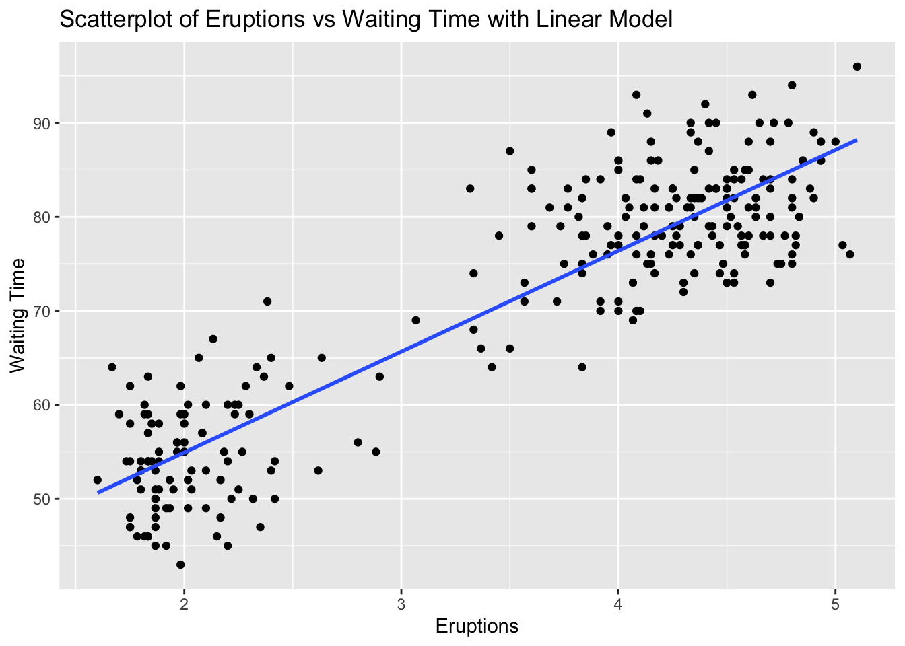

# Load up readr package. It contains the "read_csv( )" command
library(readr)Linear Modeling and Regression
Let’s briefly review what we have been learning the past few sections.
We have started to look at the idea of two variables having some type of relationship or association between them. That means that one variable is causing a change in another variable. The variable that is causing the change is being labelled as the explanatory variable, while the variable being changed is labelled as the response variable. Our first step in trying to determine if there is some type of relationship was to create a scatterplot of the two variables.
Once we had this picture of the data we were looking to see if there appeared to be any type of trend or pattern that emerged from the data. If there was, then this gave us enough evidence to move forward with the study. We talked about several different types of patterns that could appear in a scatterplot (linear, quadratic, exponential, logarightmic, etc.), but the type of pattern that we are going to focus on is a linear pattern. The pattern could follow a line very closely or perhaps have a somewhat positive or negative linear association. If the pattern closely follows a line then it will have a strong correlation close to 1 or -1 and as the pattern gets more loose, the correlation gets weaker and as it gets worse, the correlation gets closer to 0.
We saw how we. can use R to help us determine the value of the correlation. If we feel a linear model is appropriate for the data set, then our next step is to determine how to create the linear model that will best represent the data. After all, we could put a linear model anywhere on the scatterplot to use as a model, but we want the “best” line to use as our linear model.
So, what makes one linear model better than another? That depends on how you want to define what it means to be better. The idea we will want to use is as follows :
Line Of Best Fit
We will call our linear model the line of best fit if it as close as possible to all of the data points in a vertical direction. This linear model is also called a regression line.
What do we mean by “as close as possible”? We will get into this in more detail in the next section, but we are going to try to make sure the vertical distances (deviations) from the points to the linear model sums up to the smallest value possible.

Linear Model
The reason we want to use a linear model as our first model is because it is the easiest model to calculate. Here is the basic model :

To complete the model all we need to do is to calculate the slope ( \(\beta_1\) ) and the intercept ( \(\beta_0\) )! As we will see, this is quite easy to do in R. Let’s start to work through an example to help us understand the process.
We will consider the data set SVA-Weather-2013.csv. This is a dataset that collected data such as temperature, dew point, visibility, precipitation, and more from a local airport. We are wondering if the temperature affects the dew point. In other words, does a change in the temperature necessarily cause a change in the dew point. This tells us that the temperature is the explanatory variable and the dew point is the response variable. Our first steps would be to read in the dataset and to create a scatterplot of the data to see what type of pattern (association) we can see.
# Read in the data
SVA <- read_csv("SVA-Weather-2013.csv")Rows: 365 Columns: 10
── Column specification ────────────────────────────────────────────────────────
Delimiter: ","
dbl (10): YEARMODA, TEMP, DEWP, STP, VISIB, WDSP, MXSPD, MAX, MIN, PRCP
ℹ Use `spec()` to retrieve the full column specification for this data.
ℹ Specify the column types or set `show_col_types = FALSE` to quiet this message.# Examine the first few rows to make sure the data looks OK.
head(SVA)# A tibble: 6 × 10
YEARMODA TEMP DEWP STP VISIB WDSP MXSPD MAX MIN PRCP
<dbl> <dbl> <dbl> <dbl> <dbl> <dbl> <dbl> <dbl> <dbl> <dbl>
1 20130101 43.3 25.8 971. 10 5.4 8.9 47.8 37.8 0
2 20130102 38.5 29.4 973. 10 1.5 5.1 42.3 32 0
3 20130103 32 19.2 978 10 1.4 7 42.6 21.9 0
4 20130104 34.6 17.4 978. 10 3.6 8.9 45.9 26.2 0
5 20130105 36 17.9 981 10 3.4 8 48.2 25.9 0
6 20130106 40.6 26.9 977. 9.9 3.8 9.9 47.1 31.1 NAWe can now create a scatterplot for the data :
# Remember to make sure tidyverse is loaded up to use ggplot!
library(tidyverse)# We are now ready to create the scatterplot
ggplot(SVA, aes(x=TEMP, y=DEWP)) +
geom_point()Recall that we are going to use three characteristics to describe a scatterplot: the form, direction and strength. Based on this scatterplot we could deduce the following :
- Form : Linear
- Direction : Positive Association
- Strength : Strong correlation
This is showing us that there appears to be a positive, linear association between the two variables and since the pattern has a clear linear pattern we can determine that the correlation is strong. It is not perfect, but it is still good. We will see below that R is close to 0.95 for this data set. All of this tells us that a linear model would be a good fit for this particular dataset.
Finding the Slope
Our next step then would be to consider how to calculate the slope of the model. While in practice we will not calculate these by hand, it is worth seeing these formulas so we can better understand them and interpret them. The slope of the regression line \(b_1\) can be calculated as follows :
where
- \(s_y\) is the standard deviation of the response variable
- \(s_x\) is the standard deviation of the explanatory variable
- \(R\) is the correlation
We can calculate these easily using R:
# Find the standard deviation of the response variable, Dew Point
# using the built-in "sd( )" command :
DEWP_sd <- sd(SVA$DEWP)
# Print it out to see the result :
DEWP_sd[1] 18.12688Now do the same for the explanatory variable, Temperature
TEMP_sd <- sd(SVA$TEMP)
TEMP_sd[1] 15.56908Next we can calculate the correlation.
cor(SVA$TEMP, SVA$DEWP)[1] 0.9511601We can now calculate the slope :
Interpreting the Slope
Here is how we can interpret the slope. For this example, the slope tells that as the explanatory increases by 1 unit, the reponse variable will increase by 1.107 units.
If we had calculated \(r = -.45\), then we would say that as the explanatory variable increases by 1 unit, the response variable decreases by 0.45 units
Finding the Intercept
Now that we have the slope, we are ready to calculate the intercept, \(b_0\). If you recall, the intercept is where the model would intersect the \(y\)- axis. The calculation of the intercept uses the fact the regression line passes through the point \(( \overline{x}, \overline{y})\) where \(\overline{x}\) is the average of the explanatory variable and \(\overline{y}\) is the average of the response variable.
We can solve for the intercept \(b_0\) by plugging these values back into our model to get
As you can see from this formula, we will always need to calculate the slope first since we use it here. We also need to calculate these averages:
# Calculate the average of the Temperatures
TEMP_avg <- mean(SVA$TEMP)
TEMP_avg[1] 53.98219# Calculate the average of the Dew Points
DEWP_avg <- mean(SVA$DEWP)
DEWP_avg[1] 41.72849This shows us \(\overline{x} = 53398219\) and \(\overline{y} = 41.72849\) We can now calculate the intercept as :
Interpreting the Intercept
Here is how we can interpret the intercept. This is the response variable if the explanatory variable we set to zero.
Do not forget to keep the context of the data set. Sometimes having the explanatory going to zero makes sense, and other times it does not.
We now have the slope and intercept for our model and can construct it as:
\(\displaystyle{\hat{y} \,\,\, = (slope)\,*\, x \,\,\, + \,\,\, (intercept)}\)
\(\displaystyle{\hat{y} \,\,\, = 1.107\,*\, x \,\,\, + \,\,\, (-18.03)}\)
\(\displaystyle{\hat{y} \,\,\, = 1.107\,*\, x \,\,\, - \,\,\, 18.03}\)
Drawing the Model
Now that we have the equation for the model (or regression line), how do we put the model on the scatterplot? Remember that in order to graph a line, all you need are two points. So let’s create two points, connect the dots and we will have our line on the scatterplot!
When picking two points to plot, make sure you pick two values that are relevant to the data. In this case, the explanatory variables run from about 20 to 80, so let’s pick the values of \(x_1 = 40\) and \(x_2 = 60\) to create the points for the model. All we do is put these values into the model to see what response values pop back out :
This tells me one point on the model is (40, 26.25). We can similary find the second point:
The second point we will use is (60, 48.39). We can now draw these points on the scatterplot :
and then connect our dots to draw the model :
This was a quick example to show you the math behind finding the linear model. We will be using R to do most of the heavy lifting for us in creating the model.
Adding the Model to the Scatterplot with ggplot
As we have been developing our skills with ggplot we have seen that it builds its images one layer at a time. We will take advantage of this by simply adding one more layer to the scatterplot from earlier when we want to draw the model on the data.
We will be using the lm( ) command to draw the linear model for us. This command is located in the stats package, so make sure it is loaded up before using this command. The syntax of the command is fairly easy, but you do have to be a little careful. If you remcall, when we calculated the correlation, the order in which we listed the variables did not matter. However, it is very important to list the variables in the proper order for the lm( ) command. Here is the syntax:
There are a couple of ways we can denote the explanatory and response variables. We could give the lm( ) command the name of the data set and the short names for the vairables, or we could just give the fullname for the variables. In this example, we could use either one of the following two methods :
or
Again, it is important to note the order in which the variables are listed : Response followed by Explanatory.
Note
Note that it is not necessary to add the “formula =” part of the command. We could do something like this:
lm(DEWP ~ TEMP, data=SVA)
When we run this command, we will see that we are given the slope and the intercept for the linear model.
# Load the stats package
library(stats)# Style 1 :
lm(SVA$DEWP ~ SVA$TEMP)
Call:
lm(formula = SVA$DEWP ~ SVA$TEMP)
Coefficients:
(Intercept) SVA$TEMP
-18.053 1.107 # Style 2 :
lm(DEWP ~ TEMP, data=SVA)
Call:
lm(formula = DEWP ~ TEMP, data = SVA)
Coefficients:
(Intercept) TEMP
-18.053 1.107 You will notice a slight discrepancy in our work above and what we are shown here. That is because when we did this by hand we rounded after a few decimal places. R will not do that until the end, causing the slight change.
We can now add this layer to the scatterplot using the following command :
You can see that the first two lines are how we created the initial scatterplot. The third layer we added was the geom_smooth( ) command. This is the command that will put a model on the data for us. Creating a model is a process called smoothing the data, hence the name of the command. There are several methods we could use, so we will tell it to use the lm( ) method for linear model. The last parameter asks if we want to put in the standard error. This is a buffer where we acknowledge that the sampling procedure produces some variability that could affect the model. For this example, let’s leave it out for now so we can see that the scatterplot looks like with just the linear model on top:
ggplot(SVA, aes(x=TEMP, y=DEWP)) +
geom_point() +
geom_smooth(method='lm', se=FALSE)`geom_smooth()` using formula = 'y ~ x'Just so you can see it, here is what the plot would look like with the standard error included :
ggplot(SVA, aes(x=TEMP, y=DEWP)) +
geom_point() +
geom_smooth(method='lm', se=TRUE)`geom_smooth()` using formula = 'y ~ x'You have to look closely on this one. The gray area around the line represents the standard error. Since the correlation was so strong, there is not much room for error. To show you a better exmaple for standard error, let’s create a scatterplot for Temperature affecting Wind Speed:
cor(SVA$TEMP, SVA$WDSP)[1] -0.1391327In this case, the correlation is much weaker so the standard error should be larger. We can take a quick look here:
ggplot(SVA, aes(x=TEMP, y=WDSP)) +
geom_point() +
geom_smooth(method='lm', se=TRUE)`geom_smooth()` using formula = 'y ~ x'Conclusion
We have now seen how we can quickly compute and add a linear model to help us understand our dataset. One idea we will come back to in the next section is what we can do with this model. We want to talk a bit more on why this is the “model of best fit”, as well as look at the first application for these regression lines (linear models).
Exercises
In this assignment, you will practice determining if there is a linear relationship between two quantitative variables in various built-in datasets in R. You will calculate the correlation, create basic scatterplots using ggplot2, and add a linear model to the scatterplots using geom_smooth with the lm method to visualize the relationships. Each problem will involve different pairs of variables from different datasets. Provide solutions and explanations for each problem.
For each problem, answer the following:
- Calculate the correlation between the given variables.
- Create a scatterplot using
ggplot2. - Calculate the slope and intercept for the linear model. Write out the equation for the linear model.
- Add a linear model to the scatterplot using
geom_smoothwith thelmmethod. - Determine if the linear model is appropriate for the data.
Problem 1: Iris Dataset - Sepal Length vs Petal Length
Task: Determine if there is a linear relationship between Sepal.Length and Petal.Length in the iris dataset.
Solution and Explanation:
# Load ggplot2 and iris dataset
library(ggplot2)
data(iris)
# Calculate correlation
cor_sepal_petal <- cor(iris$Sepal.Length, iris$Petal.Length)
cor_sepal_petal[1] 0.8717538# Create scatterplot with linear model
ggplot(iris, aes(x = Sepal.Length, y = Petal.Length)) +
geom_point() +
geom_smooth(method = "lm", se = FALSE) +
labs(title = "Scatterplot of Sepal Length vs Petal Length with Linear Model", x = "Sepal Length", y = "Petal Length")`geom_smooth()` using formula = 'y ~ x'# Explanation:
# The correlation value indicates the strength and direction of the linear relationship between Sepal Length and Petal Length.
# The scatterplot visualizes this relationship, and the linear model (line) shows the best fit line.Problem 2: Airquality Dataset - Ozone vs Wind
Task: Determine if there is a linear relationship between Ozone and Wind in the airquality dataset.
Solution and Explanation:
# Load ggplot2 and airquality dataset
library(ggplot2)
data(airquality)
# Remove NA values
airquality_clean <- na.omit(airquality)
# Calculate correlation
cor_ozone_wind <- cor(airquality_clean$Ozone, airquality_clean$Wind)
cor_ozone_wind[1] -0.6124966# Create scatterplot with linear model
ggplot(airquality_clean, aes(x = Ozone, y = Wind)) +
geom_point() +
geom_smooth(method = "lm", se = FALSE) +
labs(title = "Scatterplot of Ozone vs Wind with Linear Model", x = "Ozone", y = "Wind")`geom_smooth()` using formula = 'y ~ x'
# Explanation:
# The correlation value indicates the strength and direction of the linear relationship between Ozone and Wind.
# The scatterplot visualizes this relationship, and the linear model (line) shows the best fit line.Problem 3: ToothGrowth Dataset - Dose vs Length
Solution and Explanation:
# Load ggplot2 and ToothGrowth dataset
library(ggplot2)
data(ToothGrowth)
# Calculate correlation
cor_dose_len <- cor(ToothGrowth$dose, ToothGrowth$len)
cor_dose_len[1] 0.8026913# Create scatterplot with linear model
ggplot(ToothGrowth, aes(x = dose, y = len)) +
geom_point() +
geom_smooth(method = "lm", se = FALSE) +
labs(title = "Scatterplot of Dose vs Length with Linear Model", x = "Dose", y = "Length")`geom_smooth()` using formula = 'y ~ x'
# Explanation:
# The correlation value indicates the strength and direction of the linear relationship between Dose and Length.
# The scatterplot visualizes this relationship, and the linear model (line) shows the best fit line.Problem 4: Cars Dataset - Speed vs Stopping Distance
Task: Determine if there is a linear relationship between speed and dist in the cars dataset.
Solution and Explanation:
# Load ggplot2 and cars dataset
library(ggplot2)
data(cars)
# Calculate correlation
cor_speed_dist <- cor(cars$speed, cars$dist)
cor_speed_dist[1] 0.8068949# Create scatterplot with linear model
ggplot(cars, aes(x = speed, y = dist)) +
geom_point() +
geom_smooth(method = "lm", se = FALSE) +
labs(title = "Scatterplot of Speed vs Stopping Distance with Linear Model", x = "Speed", y = "Stopping Distance")`geom_smooth()` using formula = 'y ~ x'
# Explanation:
# The correlation value indicates the strength and direction of the linear relationship between Speed and Stopping Distance.
# The scatterplot visualizes this relationship, and the linear model (line) shows the best fit line.Problem 5: Faithful Dataset - Eruptions vs Waiting Time
Task: Determine if there is a linear relationship between eruptions and waiting in the faithful dataset.
Solution and Explanation:
# Load ggplot2 and faithful dataset
library(ggplot2)
data(faithful)
# Calculate correlation
cor_eruptions_waiting <- cor(faithful$eruptions, faithful$waiting)
cor_eruptions_waiting[1] 0.9008112# Create scatterplot with linear model
ggplot(faithful, aes(x = eruptions, y = waiting)) +
geom_point() +
geom_smooth(method = "lm", se = FALSE) +
labs(title = "Scatterplot of Eruptions vs Waiting Time with Linear Model", x = "Eruptions", y = "Waiting Time")`geom_smooth()` using formula = 'y ~ x'
# Explanation:
# The correlation value indicates the strength and direction of the linear relationship between Eruptions and Waiting Time.
# The scatterplot visualizes this relationship, and the linear model (line) shows the best fit line.Problem 6: ChickWeight Dataset - Time vs Weight
Task: Determine if there is a linear relationship between Time and weight in the ChickWeight dataset.
Solution and Explanation:
# Load ggplot2 and ChickWeight dataset
library(ggplot2)
data(ChickWeight)
# Calculate correlation
cor_time_weight <- cor(ChickWeight$Time, ChickWeight$weight)
cor_time_weight[1] 0.8371017# Create scatterplot with linear model
ggplot(ChickWeight, aes(x = Time, y = weight)) +
geom_point() +
geom_smooth(method = "lm", se = FALSE) +
labs(title = "Scatterplot of Time vs Weight with Linear Model", x = "Time", y = "Weight")`geom_smooth()` using formula = 'y ~ x'
# Explanation:
# The correlation value indicates the strength and direction of the linear relationship between Time and Weight.
# The scatterplot visualizes this relationship, and the linear model (line) shows the best fit line.Problem 7: Pressure Dataset - Temperature vs Pressure
Task: Determine if there is a linear relationship between temperature and pressure in the pressure dataset.
Solution and Explanation:
# Load ggplot2 and pressure dataset
library(ggplot2)
data(pressure)
# Calculate correlation
cor_temperature_pressure <- cor(pressure$temperature, pressure$pressure)
cor_temperature_pressure[1] 0.7577923# Create scatterplot with linear model
ggplot(pressure, aes(x = temperature, y = pressure)) +
geom_point() +
geom_smooth(method = "lm", se = FALSE) +
labs(title = "Scatterplot of Temperature vs Pressure with Linear Model", x = "Temperature", y = "Pressure")`geom_smooth()` using formula = 'y ~ x'
# Explanation:
# The correlation value indicates the strength and direction of the linear relationship between Temperature and Pressure.
# The scatterplot visualizes this relationship, and the linear model (line) shows the best fit line.Problem 8: Trees Dataset - Girth vs Volume
Task: Determine if there is a linear relationship between Girth and Volume in the trees dataset.
Solution and Explanation:
# Load ggplot2 and trees dataset
library(ggplot2)
data(trees)
# Calculate correlation
cor_girth_volume <- cor(trees$Girth, trees$Volume)
cor_girth_volume[1] 0.9671194# Create scatterplot with linear model
ggplot(trees, aes(x = Girth, y = Volume)) +
geom_point() +
geom_smooth(method = "lm", se = FALSE) +
labs(title = "Scatterplot of Girth vs Volume with Linear Model", x = "Girth", y = "Volume")`geom_smooth()` using formula = 'y ~ x'
# Explanation:
# The correlation value indicates the strength and direction of the linear relationship between Girth and Volume.
# The scatterplot visualizes this relationship, and the linear model (line) shows the best fit line.Problem 9: USArrests Dataset - Urban Population vs Assaults
Task: Determine if there is a linear relationship between UrbanPop and Assault in the USArrests dataset.
Solution and Explanation:
# Load ggplot2 and USArrests dataset
library(ggplot2)
data(USArrests)
# Calculate correlation
cor_urbanpop_assault <- cor(USArrests$UrbanPop, USArrests$Assault)
cor_urbanpop_assault[1] 0.2588717# Create scatterplot with linear model
ggplot(USArrests, aes(x = UrbanPop, y = Assault)) +
geom_point() +
geom_smooth(method = "lm", se = FALSE) +
labs(title = "Scatterplot of Urban Population vs Assaults with Linear Model", x = "Urban Population", y = "Assaults")`geom_smooth()` using formula = 'y ~ x'# Explanation:
# The correlation value indicates the strength and direction of the linear relationship between Urban Population and Assaults.
# The scatterplot visualizes this relationship, and the linear model (line) shows the best fit line.Problem 10: Swiss Dataset - Education vs Fertility
Task: Determine if there is a linear relationship between Education and Fertility in the swiss dataset.
Solution and Explanation:
# Load ggplot2 and swiss dataset
library(ggplot2)
data(swiss)
# Calculate correlation
cor_education_fertility <- cor(swiss$Education, swiss$Fertility)
cor_education_fertility[1] -0.6637889# Create scatterplot with linear model
ggplot(swiss, aes(x = Education, y = Fertility)) +
geom_point() +
geom_smooth(method = "lm", se = FALSE) +
labs(title = "Scatterplot of Education vs Fertility with Linear Model", x = "Education", y = "Fertility")`geom_smooth()` using formula = 'y ~ x'
# Explanation:
# The correlation value indicates the strength and direction of the linear relationship between Education and Fertility.
# The scatterplot visualizes this relationship, and the linear model (line) shows the best fit line.